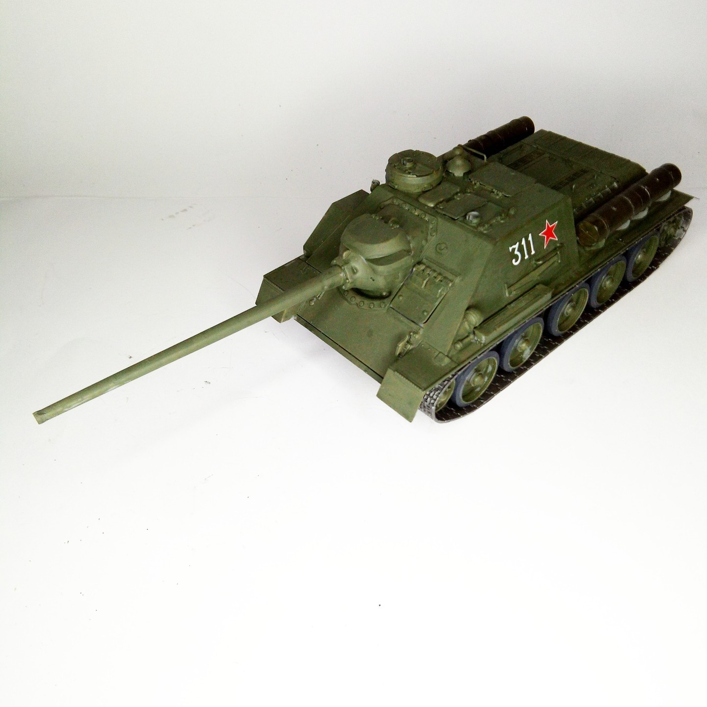

Mezzi militari · scale model archive
Su-85 tank destroyer
Su-85 tank destroyer — Kit: Tamiya, Scale: 1/35. #1/35 #Tamiya

Photo gallery
English description
#1/35 #Tamiya
Mezzi militari · scale model archive
Su-85 tank destroyer — Kit: Tamiya, Scale: 1/35. #1/35 #Tamiya
